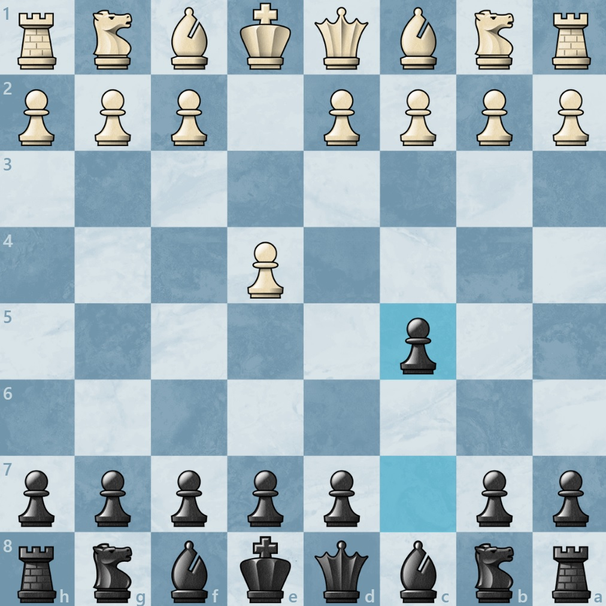

Queen c2?

I first learned chess back in 2015, after moving to Europe. At first I
learned how to play from an offline app, playing only against the
program, but only for a few months, after that it took me five years to
come back to chess.
This time I created an account on chess.com, and
started watching youtube videos on how to play, in about two months I
got to 1200 ELO on the site, but after that I stopped playing again for
a while, now since december 21 I've been playing a little and
getting a little break.
I love playing chess because is a great brain
exercise, also love sodoku and puzzels. If you'd like to play chess
against me just add me at chess.com, gucionba is my username 😉